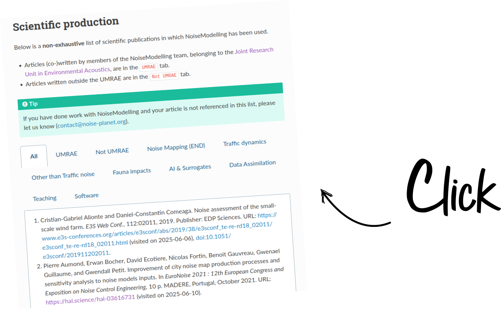

Below are presented the scientific productions, (co)authored by Noise-Planet team members and dealing with NoiseCapture, NoiseModelling and OnoMap.
Some articles, authored by other external researchers are also listed in dedicated sections.
CAN A., AUDUBERT P., AUMOND P., GEISLER E., GUIU C., LORINO T., ROSSA E. «Framework for urban sound assessment at the city scale based on citizen action, with the smartphone application NoiseCapture as a lever for participation». Noise Mapping, vol. 10, no. 1, 2023, pp. 20220166. Read More (Open Access article - see PDF)
BOUMCHICH A., PICAUT J., BOCHER E., «Using a Clustering Method to Detect Spatial Events in a Smartphone-Based Crowd-Sourced Database for Environmental Noise Assessment». Sensors 2022, 22, 8832. Read More (Open Access article - see PDF)
GUILLAUME G., AUMOND P,. BOCHER E., CAN A., ECOTIERE D., FORTIN N., FOY C., GAUVREAU B., PETIT G., PICAUT J., «NoiseCapture smartphone application as pedagogical support for education and public awareness». Journal of the Acoustical Society of America 1 May 2022; 151 (5): 3255–3265 Read More
PICAUT J., BOUMCHICH A., BOCHER E., FORTIN N., PETIT G. and AUMOND P. «A Smartphone-Based Crowd-Sourced Database for Environmental Noise Assessment». International Journal of Environmental Research and Public Health. 2021. 18 (15): 7777. Read More (Open Access article - see PDF)
PICAUT J., FORTIN N., BOCHER E., PETIT G., AUMOND P., GUILLAUME G. «An open-science crowdsourcing approach for producing community noise maps using smartphones». Building and Environment. 2019. Vol. 148, pp. 20-33. Read More (Open Access article - see PDF)
BOCHER E., PETIT G., PICAUT J., FORTIN N., GUILLAUME G. «Collaborative noise data collected from smartphones». Data in Brief [On line]. 2017. 14C pp. 498-503. Read More (Open Access article - see PDF)
PICAUT J., FORTIN N., AUMOND P., BOCHER E., PETIT G., GUILLAUME G. «NoiseCapture : une démarche Open Science pour la production collaborative de cartes de bruit à l'aide de smartphones ». Acoustique & Techniques. 2017. pp. 37-46. Read More
GUILLAUME G., CAN A., PETIT G., FORTIN N., PALOMINOS S., GAUVREAU B., BOCHER E., PICAUT J. «Noise mapping based on participative measurements». Noise Mapping [On line]. 2016. Vol. 3, n°1, pp. 140–156. Read More (Open Access article - see PDF)
CAN A., AUDUBERT P., AUMOND P., GEISLER E., GUIU C., LORINO T., ROSSA E. «Sound environments and citizen action: what place for the participatory tool? The case of the city of Reze using NoiseCapture». Proceedings of Internoise 2022, Glasgow, 21-24 August, 2022. Read More
CAN A., AUDUBERT P., AUMOND P., GEISLER E., GUIU C., LORINO T., ROSSA E. «Environnements sonores et action citoyenne : quelle place pour l’outil participatif ? Le cas de la ville de Rezé». Proceedings of UGI (Union Geographique Internationale) 2022, Paris, 18-22 July, 2022
AUMOND P., GUIU C., ALLES C. and CAN A. «Participative and interdisciplinary data collection for the study of urban soundscapes». In Proceeding of Inter-Noise 2020. Seoul, KR.
PICAUT J., FORTIN N., AUMOND P., PETIT G. and BOCHER E. «Exploiting data from the NoiseCapture application for environmental noise measurements with a smartphone». In Proc. 50th International Congress and Expo on Noise Control Engineering. USA (Online). 2021.
GUILLAUME G., PETIT G., FOY C., ECOTIERE D., PICAUT J., AUMOND P., GAUVREAU B., BOCHER E. and FORTIN N. «Use of a smartphone measurement application to teach basics in buildings and environmental acoustics to schoolchildren and teachers». In e-Forum Acusticum 2020, 2587‑94. LYON, France. Read More
AUMOND P., GUIU C., ALLES C., & CAN A. «Participative and interdisciplinary data collection for the study of urban soundscapes». Proceeding of Inter-Noise 2020. 49th International Congress and Exposition on Noise Control Engineering, Seoul, KR, 2020.
PICAUT J., AUMOND P., CAN A., FORTIN N., GAUVREAU B., BOCHER E., PALOMINOS S., PETIT G., GUILLAUME G. «Noise mapping based on participative measurements with a smartphone». In: 173rd Meeting of the Acoustical Society of America and the 8th Forum Acusticum. Boston, USA, 2017. Read More
PICAUT J. «NoiseCapture, une approche collaborative pour répondre aux enjeux de la maitrise des nuisances sonores». Les rencontres nationales de l’ingénierie territoriale, Les collectivités locales face aux enjeux de l’économie circulaire, Dunkerque, France, 2019.
PICAUT J., FORTIN N., BOCHER E., & PETIT G. «NoiseCapture, une approche participative pour la production de cartes de bruit avec un smartphone». Colloque National Capteurs et Sciences Participatives, Sorbonne Université, France, 2019.
PICAUT J., FORTIN N., & AUMOND P. «Calibrage Acoustique de Smartphones pour la Mesure du Bruit dans l’Environnement». Actes du Congrès Français d’Acoustique. 14e Congrès Français d’Acoustique, Le Havre, France, 2018. Read more
Dubey, Rakesh, Shruti Bharadwaj, M. Zafar, Vinamra Sharma, et S. Biswas. 2020. «Collaborative noise mapping using smartphone». ISPRS - International Archives of the Photogrammetry, Remote Sensing and Spatial Information Sciences XLIII-B4-2020 (août): 253‑60. Read More
Graziuso, G., M. Grimaldi, S. Mancini, J. Quartieri, et C. Guarnaccia. 2020. «Crowdsourcing Data for the Elaboration of Noise Maps: A Methodological Proposal». Journal of Physics: Conference Series 1603 (septembre): 012030. Read More
Graziuso, Gabriella, Simona Mancini, Antonella Bianca Francavilla, Michele Grimaldi, et Claudio Guarnaccia. 2021. «Geo-Crowdsourced Sound Level Data in Support of the Community Facilities Planning. A Methodological Proposal». Sustainability 13 (10): 5486. Read More
L'Her, Gwendoline, Myriam Servières, et Daniel Siret. 2018. «La Cartopartie, une nouvelle forme de balade urbaine déployée par les villes». Les Cahiers de la recherche architecturale urbaine et paysagère, no 3. December 2018. Read More
Mohammed, Hany Mohammed El-Hadi Shoukat, Sahar Sayed Ismail Badawy, Ahmed Ibrahim Hussien Hussien, et Antony Adel Fahmy Gorgy. 2020. «Assessment of Noise Pollution and Its Effect on Patients Undergoing Surgeries under Regional Anesthesia, Is It Time to Incorporate Noise Monitoring to Anesthesia Monitors: An Observational Cohort Study». Ain Shams Journal of Anesthesiology 12 (1): 20. Read More
Njegovan, Antonio. «Analiza slobodnih aplikacija za mjerenje buke». 2018. Read More
Sakagami, Kimihiro. «How did “state of emergency” declaration in Japan due to the COVID-19 pandemic affect the acoustic environment in a rather quiet residential area?» UCL Open: Environment Preprint, may 2020. Read More
You can view to an updated list of publications HERE or below. 
You will find publications written by UMRAE as well as by external researchers.
BOCHER E., PETIT G., FORTIN N., PICAUT J., GUILLAUME G., PALOMINOS S. «OnoM@p: a Spatial Data Infrastructure dedicated to noise monitoring based on volunteers measurements». In: Open Source Geospatial Research & Education Symposium. Perugia, Italie, 2016. p. 11. Read More